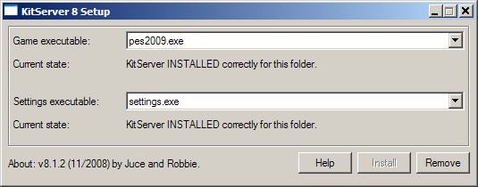

The most up-to-date version of this documentation, and the translations to many languages, are located here: http://kitserver.ath.cx/docs/
Kitserver 8 is an add-on program for Pro Evolution Soccer 2009 (and Pro Evolution Soccer 2009 DEMO). It is a loader and manager for various modules.
Below is a quick summary of the available features. Follow the link in the left column to get more details about a particular module.
| AFS2FS 8.0.5 | afs2fs.dll | Manage AFS (.img) game content using files and folders: much easier and quicker to install/remove patches, without the need modify *.img files |
|---|---|---|
| LOD Mixer 8.0.6 | lodmixer.dll | Various tweaks to graphics and game options: Any window resolution supported, hidden fullscreen resolutions unlocked; Manual/Automatic aspect ratio correction. |
| Camera module 8.0.4 | camera.dll | Increase the camera viewing angle for Normal and Wide cameras, and enjoy new playing experience. |
As with previous version of Kitserver, you have to unpack the archive to your PES installation folder. It should look like this:
Then go to kitserver folder and run the setup.exe. If not already chosen automatically, select your executable file (pes2009.exe) from the drop-down list, and click "Install". If you choose that you don't want to use Kitserver any longer, run setup.exe again and click "Remove".
The kitserver setup.exe program can also be run without GUI - in a so-called batch or command-line mode. This can be useful, if kitserver is part of a bigger patch, which contains an installer, and typically the last step of the installer is to attach kitserver to the game EXE file. This can be accomplished by running the setup like this:
setup --install --gfile={game-exe} --sfile={settings-exe}
setup --remove --gfile={game-exe} --sfile={settings-exe}
Example:
setup --install --gfile=..\pes2009.exe
In the kitserver folder, there is the program's main configuration file - config.txt. This is where you would need to make changes to enable/disable individual modules (DLLs), and/or configure module settings.
Here's how my config.txt looks like:
[afsio] debug = 1 [afs2fs] debug = 1 [kload] dll = afsio.dll dll = afs2fs.dll
Each module can have its own configuration section, which starts with [module-name], and typically has one or more options following it. Now, normally you wouldn't need to modify config.txt file, except for the cases, when you need to modify the behaviour of a particular module (DLL), or enable/disable such DLL.
To disable a particular module - just comment out the corresponding line in the [kload] section by putting a '#' symbol at the beginning. (Or you can delete that line altogether.)
Formerly known as lodcfg.exe (it used to be the GUI tool for LOD mixer only, but now it covers other configuration options as well), this simple GUI program allows to modify some configuration settings in config.txt. It's a helper tool and all that it does, you can also do manually, by editing config.txt in your favourite text editor. In fact, some things you can only do manually - like adding and removing modules (DLLs). But for simple things - like changing resolution, or choosing camera angle - it's faster and easier to just launch config.exe, quickly adjust things, then click [Save] button, and you're done.
This module allows to organize your BIN-files into folders on disk, instead of inserting them into AFS(*.img) files, which is sometimes a pain, and may require a lot of extra disk space.
Several people over the last few years had suggested similar solutions, but ultimately it was Str@teG who kept talking about this idea of organizing BINs into folders, and eventually i decided to just go ahead and do it. So now this is realized in the this module - afs2fs.dll. From personal experience, i know that people are sometimes reluctant to install big patches that require an AFS-rebuild, not because it's particularly difficult or anything, but because it can be time-consuming and disk-space-hungry. With afs2fs, this is now very easy: you just put the BIN into correct folder and that's it. And, of course, there are no size constraints - the bins can be as large as needed!
In kitserver folder, there should be an img folder - if it's not there, create it, and then inside "img", create folders, as needed, named - cv00.img, cv01.img, cs0d.img, and so for. That's where you're going to be putting the BIN-files.
It's important to name the folders correctly: a folder must have exactly the same name as the corresponding AFS-file. For instance, if you call a folder cv00, instead of cv00.img, things will not work.)
This is how my img folder looks:

In general, you can name the files whichever way you want, but you must follow one rule: there must be a BIN number in the name, and it must be preceded by an underscore character ('_'). Also, the filenames CANNOT be longer than 63 characters.
Examples of correctly named files:
unknown_317.bin
gloves_5820.bin
ball_8.bin
unknow_8 (.bin extension is optional)
music_104.adx (a file can have a different extension: .adx is typically used for music and sound files)
Examples of incorrectly named files:
unnamed10.bin - no underscore symbol before the BIN number.
face.bin - no BIN number.
By default, the AFS2FS module expects to find the img folder inside the kitserver folder. However, it is also possible to configure the location of "img" folder to be anywhere on your hard disk. This makes it easier to both manage your game content - you can keep the "GDB" and "img" folders away from the game/kitserver folders, and also makes for an easier upgrade of kitserver.
To specify the location of img folder, use "img.dir" option in [afs2fs] section of the config.txt file. Like this:
[afs2fs] img.dir = "c:\mypesfiles\"
Two important things to remember:
When replacing songs with AFS2FS, it is also possible to change the title of the song and the author name, by using a songs.txt map-file, which should be put into kitserver\names folder.
Here's an example of such songs.txt file:
# Song names map # Format:, " ", " " # Note that double quotes are required. # (possible binIds: 91-150) 104, "Vne zony dostupa", "Gorod 007"
Similarly with balls, it is often desirable to specify names which are longer than the original ones. One easy way to do that is to use a balls.txt map-file, which should be put into kitserver\names folder:
# Ball names map # Format:, " " # Note that double quotes are required. # (Ball numbers go from 1 to 13) 7, "Nike Total 90 Omni White Yellow"
LOD-Mixer is the module that allows to fine-tune some aspects of PES2008 graphics engine.
Currently the following features are implemented: screen resolution and aspect ratio correction. All of these can be configured manually in kitserver's main
configuration file (kitserver/config.txt), but you can also use Kitserver's configuration tool (config.exe).
Many LCD monitors are neither 4:3 nor 16:9. Often, a 16:10 ratio is used, or even 16:9.6. This results in the picture being distored: players either too fat or too skinny, and ball is not round. In this year version, Konami decided to address that by introducing the black bars to compensate for the case when aspect-ratio is different (LB checkbox). However, if you don't like the black bars, then run settings.exe, turn off the LB checkbox, and then use Kitserver's aspect-ratio correction feature instead:
With LOD Mixer, you can set the aspect ratio to whatever you want. Either let LOD Mixer calculate it automatically - at run-time, using the current screen width and height in pixels - or set the value manually. Automatic way would work quite accurately, assuming the pixel is square. Sometimes, however, you would want to set it manually. For example, i play on widescreen monitor, but using a 800x600 resolution, because my video card is not powerful enough. The automatic calculation would give 4:3, but since the view is stretched to fill the entire screen, we need to account for that. Setting aspect ratio to 1.6 (which is a natural AR for my laptop) does the trick.
You can set any screen resolution you want, if you play in a Windowed mode. Even crazy screens like 1567x532 will work, but you're likely to suffer from performance problems on such cases. Hidden fullscreen resolutions are fully unlocked now as well. However, only those that your video card really supports in full-screen mode, will work. If you accidently choose an unsupported fullscreen resolution, then PES should still be able to start in a window.
This feature may be useful to people who like to play a tournament - a league or cup together. PES 2009 doesn't allow human players to control both teams, unless both of their selected teams are playing against each other in the match. With this new feature, you can remove that limitation. Now, even if it is for example, P1 vs. COM game, or P2 vs. COM - you can freely select which team you control with each controller. So, you can both play on the same team, or you can let your friend control the opposition - to make things more interesting. You can also now choose a "Spectator" mode for in tournaments.
For reasons known only to Konami product managers, for the second year running, they took away the interface feature that allowed to adjust camera angle (it was in PES3-PES6, but it disappeared starting with PES2008). The underlying logic is still present in the game executable though, and this module allows you to take advantage of it. You can adjust the camera angle: standard values are 0 - 9, but you can actually set a bigger value, which will result in camera turning even more. For example, i like to play with angle value set to 30.
Choose any value from 0 to 2^32-1. Angles like 50, 100, 200 give quite a different perspective of play. More fun :)
Use Kitserver configuration tool (config.exe) or, you can also edit your config.txt file manually, like this:
[camera] angle = 100
Programming: juce and Robbie
Beta-testing: members and guests of Evo-Web and PesWe.com forums.
Original idea for afs2fs modules: Str@teG
Many other ideas came from users of Evo-Web forums and PesWe.com forums
Special thanks go to: administrators of PesWe.com website and members of PesWe.com forums.